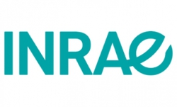

OhmPi project¶
Authors:¶
Parteners:¶
|  | ||

|
Creation date : July 10, 2020
Update : February 09, 2022.
Status of document: In progress.
Citing OhmPi:¶
Rémi Clement, Yannick Fargier, Vivien Dubois, Julien Gance, Emile Gros, et al.. OhmPi: An open source data logger for dedicated applications of electrical resistivity imaging at the small and laboratory scale. HardwareX, Elsevier, 2020, 8, 24 p. ff10.1016/j.ohx.2020.e00122ff.
Introduction to OhmPi:¶
This documentation presents the development of a low-cost, open hardware resistivity meter to provide the scientific community with a robust and flexible tool for small-scale experiments. Called OhmPi, this basic resistivity meterfeatures current injection and measurement functions associated with a multiplexer that allows performing automatic measurements with up to 32 electrodes.OhmPi’s philosophy is to provide a fully open source and open hardware toolto the near surface scientific community.
Note
Everyone willing to get involved is welcome in OhmPi Project!.